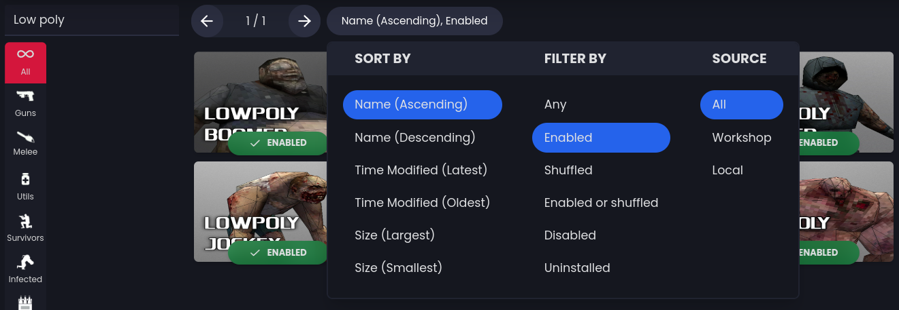
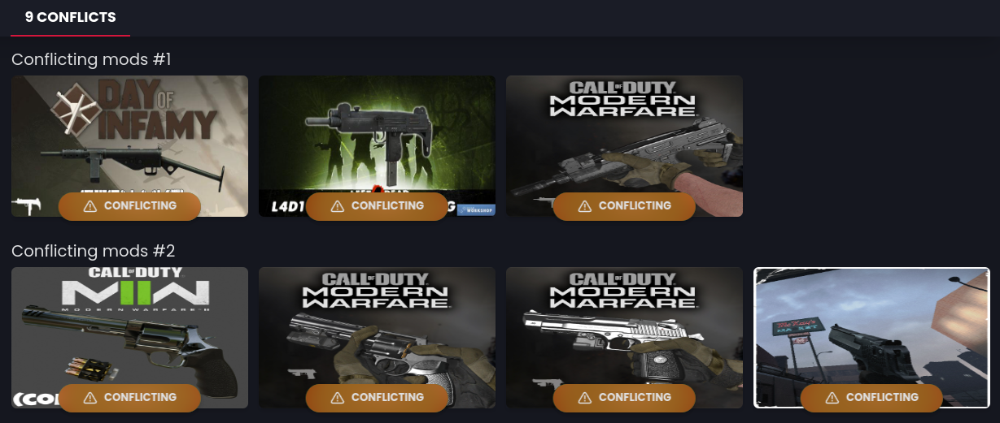
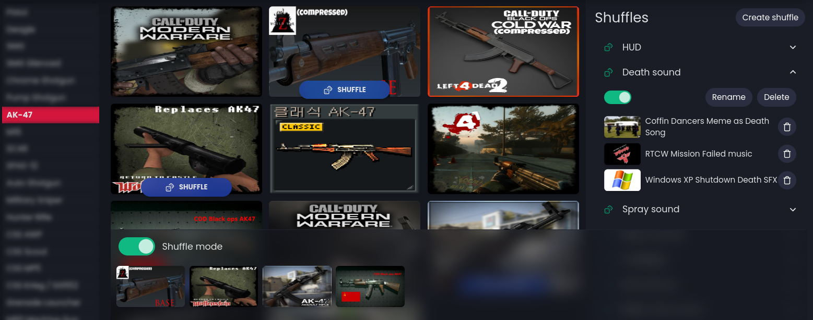
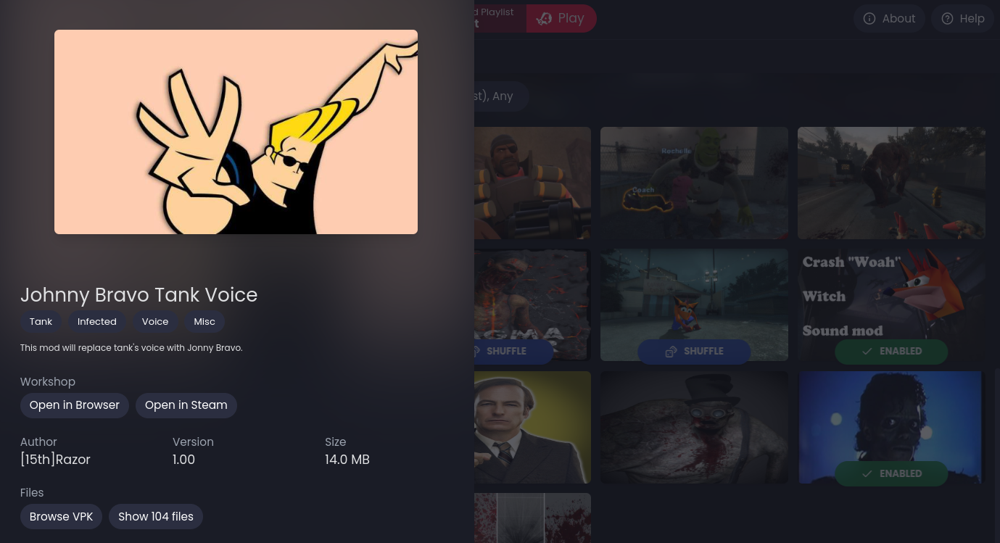
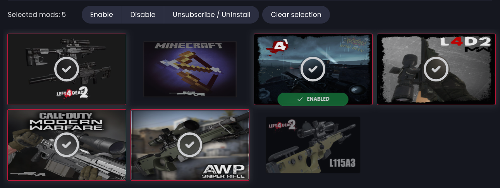

Funky
The funkiest mod manager for Left 4 Dead 2

Download Funky 0.2.0
Search & Filters
Unlike the built-in addons menu, Funky comes with the essentials: search, pagination, filters and sorting funcitonalities Auto-Categorization
Mods are automatically categorized based on what they change and are easily discoverable with an intuitive UI

Conflicts Solver
Funky shows you exactly which mods conflict with eachother, making it easy to solve any conflicts
Playlists
Quickly hop between various selections of mods with Playlists

Shuffles
Change things up with Shuffles, which randomize your mod selection everytime you launch the game
Mod Overview
Inspect individual mods with basic details and useful actions
Multi-Mod Selection
Select multiple mods at once and perform batch actions
